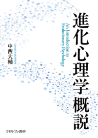
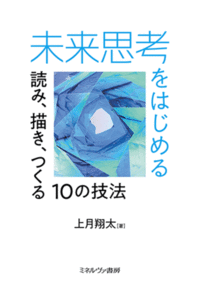

草野善太（くさの・ぜんた 1987年－）は、日本の書籍編集者。人文系学術書籍を中心に、批評、自己啓発、進化論などにも視野を広げ、編集・出版活動に従事している。
| 基本情報 | |
| 生年 | 1987年、福島県生まれ |
|---|---|
| 肩書 | 書籍編集者 |
| 担当 | 人文系学術書籍 |
| 関心領域 | |
| 言語・思想・社会批評・進化心理学 | |

その感情には、数万年の理由がある。恋も裏切りも協力も──進化が仕込んだ心の設計図を読み解く
なぜ人は愛し、嫉妬し、助け合い、時に裏切るのか。進化という視点から人間の心と行動を読み解く「進化心理学」は、心理学のなかでも新興の、しかし急速に発展を遂げている分野である。俗流の言説が先行しがちなこの分野において、性淘汰・利他性・感情・文化・脳の進化まで全体像を網羅し、単著で描ききった、研究者から学部生まで手に取れる待望の一冊。「ああ、君か。」ノックの先から聞こえてきた最初の一言に、転学部を決めていた心はその強張りを増す。眼鏡とともにかきあげられた前髪、そのあと向けられた眼差しに圧迫はなく、さりながら計りがたさを湛え、逸らされることはなかった。
「教養学部に転学したく、署名のご依頼にあがりました」
「どうして？」
応じて話したことの記憶はなく、しかし、一息挟んでの語り出しはありありと蘇る。
「民というのは、ちゃんと食にありつくことができれば幸せなんですよ。そうそう、だからこそ統治というのはね...」
ためにするでもなく、こちらを咎めるでもなく、まして親密さのふりをするでもなく、とまれ中国その他の古典を引きながら、統治や制度、慣習や習俗といった事どもが朗々と語られる。それぞれは小難しくもなく、平明な言葉であるのに、諳んじて引かれる文言をつゆほども知らず、いや、だからというべきか、さて、何を言っているのか。分子生物学者が古今東西の古典を縦横にひき紡ぐ、ささやかな、しかし確固たる語り口に、驚く。
署名の入った書類を受け取る。去り際、ドアに手を伸ばす私の背後から声がかかる。「きみ、この分野もぼくの指導も、気に入らなかったろう。まあ、学ぶとよいですよ。」
比べて少なくない時間が、ドアを閉めてから流れた。惰性と怠慢とに運ばれつつ、埼玉から京都へ。挙句の編集という机で、名も忘れてしまったこの先生のことを思い出す。
先生、あの中国の古典は、『十八史略』の鼓腹撃壌のことですよね。モンテスキューの『法の精神』にも、「われわれをあるがままでいさせてほしいものだ」という一節があって、そうそう、あのあと私は京都にいって、18世紀のフランスの思想家たちを学んだりしたんですよ。法に何ができるのかというより、法に何ができないのかということ、いかに統治が重層的に決定されているか、もって専制を退けようと考えた彼は、なかでも18世紀最高の知性との評価もあります。進化心理学も、そうした重層性の一角を照らしているのかもしれないと思ったのです。先生は――
聞いてみたいこと、話してみたいことが、尽きず脳裏を駆ける。
「でもきみ、この分野もぼくの指導も、気に入らなかったろう」。
そんなことはない、あなたに最後学べてよかった。去り際のドアの隙間から、そう返すこともできたはずだった。いまやそれは、手遅れの隔たりのなかに沈んでゆくばかりなのだけれど。
一度は捨てた学問分野に、斜交いながら接するものを上梓することになるとは、何の因果か。まして、自社への納品が四月の一日となれば、何かに化かされているのではないか、とも。
並行して担当している企画は数あるなかで、結局これが先んじたことは、偶然といえば偶然に過ぎず、それでもいささかの因縁を感じずにはいられない。それは否定すべくもない、私の人生の何がしかの帰結なのだと思う。
「誰があなたに何を言い、何を言わなかったのか。あなたは何を感じ、何を感じなかったのか」＊1、そのすべてがいつぞやかあなたに去来し、来し方の思いなしを組み替え、踏み出す行く末の足元をなす。「由来はそれでも未来に名残る」＊2。さればこそ、「過去に触れるときに吹く風は、希望の約束である」＊3ことを願う。

将来のことを考えろ、多くの人は言う。厄介なのは、そのための方法を誰も教えてくれないことだ
未来の課題はやっかいだ。正解がなく、善悪も問われ、捉え方によって解決策が変わり、間違えば取り返しがつかなくなる。エビデンス・ベースの未来予測はディストピアばかり、かといって素朴に明るすぎる未来を信じられるわけでもない。欲しいのは、虚勢でも閉塞でもない未来、平熱で考える望ましい未来だ。そのための思考法を体系的にまとめた、はじまりの一冊――それでもこの世界で生きていく、すべての人へ。（後日追加）
こんなに人間らしいデカルトを、見たことがあるだろうか――。
明晰判明、理性の人として知られるデカルトが、悲嘆におしひしがれ、心労に疲弊しているなかでも、主体が持つ身体への信頼を、道徳において語る。それは、知の探究とそれに基づく主体の変容だけではなく、生きられた層に堆積された時間の厚みのなかで、魂の平静を求め、感覚に微睡み満足することを目指す、道徳の哲学であった。企画のご相談、寄稿・講演のご依頼など、お気軽にお問い合わせください。下記フォームよりご連絡ください。
1987年福島県生まれ。2006年に埼玉大学理学部分子生物学科に入学後、2009－2010年にかけて美大予備校に通い、東京藝術大学への入学を志すも受験失敗。埼玉大学教養学部への転学準備中に東日本大震災で被災。一か月ほど被災地で過ごし埼玉に戻る。一年の休学を経て教養学部へ編入。同大教養学部を卒業後、2014年に京都大学大学院文学研究科博士前期課程（フランス語学フランス文学専攻）に入学。その間、参加した翻訳会で、フリードリヒ二世『反マキアヴェッリ論』とジャック・ネッケル『穀物立法と穀物取引について』（いずれも共訳、京都大学出版会）にかかわった。
2020年に同大学院博士後期課程を中途退学。のち2021年秋にミネルヴァ書房へ入社し営業部に配属される。北陸・中四国・滋賀・京都エリアを担当。主に大学講義用の教科書営業で各エリアを巡回。その後2024年秋に編集部へ異動となり、現在に至る。
「関心 interest」という問いについて
学士論文「言語と快楽」（2013年、埼玉大学）は、ジェレミー・ベンサムの功利主義の基礎に、認識論的言語哲学としての「フィクション論」があることを論じる試みだった。しかしその前段には、「関心 interest」とは何か、という問いがある。
17-18世紀において「関心」は、神学・美学・道徳論・統治論・経済学など（美学や経済学は当時において立ち上がりつつあるものであった）が共有する媒介概念だった。デュボスからハチスン、ヒューム、スミスを経てベンサムへと至る思想史的変遷のなかで、「関心」は情動や欲動——理性的にどうしようもないもの——を間接的に操作し整流化するための概念装置として機能してきた（そのようにみなされていた）。学士論文で「脱-関心の感性学」と呼んだのは、こうした「関心」の媒介操作的な性格を、美学と政治哲学の接点において捉え返す試みだった。
言語は、この操作において中枢的な役割を果たす。言語表象（および視覚表象）は、主体化と世界化を同時に開設する。ジャック・ラカン的に言えば、生後まもなく経験される鏡像段階において、子どもは鏡に映った像を「これは私だ」と認知しつつ「しかしこれは私ではない（像は左右が反転した外部の他者だ）」という矛盾を同時に飲み込むことで、自己と他者を分節し始める。この瞬間、言語表象と視覚表象が協働して作用し、世界は統語的に整除されたものとして立ち現れる。主客の分離、三者関係の理解、根拠律や因果律による世界把握の構造が、ここからはじまる。
しかしこの主体化は完全ではない。疎隔において何かが零れ落ちる。「本当にこれが私なのか」という不信は消えることがない。欲動や情動、ラカンが「現実界」と呼ぶものは、この零れ落ちたものとして、言語と統治による操作の外部に残り続ける。「関心」概念の思想史とは、この操作しきれない過剰を間接的に手懐けようとする知的格闘の歴史でもあったのではないか。アナクロニズムの誹りを免れないが、本稿を駆動していた裏の仮説がこれであった。
ベンサムにとって言語論と統治論が通底していたのは、なにより正確な法治を実現するためであったが、いかに情動・欲動を「関心」を媒介に整流化するか——そのために言語表象をかませることで快苦を計算可能にしようとすることが企図としてあったことも見逃せない。そして「存在もフィクション的実体である」というフィクション論の逆説は、この言語操作の徹底として読めるのではないか、というのが本稿が提示する一つのテーゼである。
現在の編集関心——人間と動物の境界、言語論、宗教と法、政治理論と現代思想、心理学と行動科学——は、いずれもこの問いの延長線上にある。言語と表象が世界を構造化し主体を形成する、そのメカニズムと限界を問い続けることが、このチャートの示すところのものである。
分子生物学科に在籍していたものの、二年次以降授業はほとんどでなくなり、アパレルメーカーで２年ほど販売に従事。そのなかで、ファッションではANREALAGE、THEATRE PRODUCTS、CICATA、Post Overallsなどのブランドを好むようになる。営業中に店舗でかけられていた音楽をきっかけに、六本木のイエローなどのクラブハウスやサマーフェスに行くなかで、NujabesやSpecial Others、Pe'zmoku、Daishi Dance、Capsule、その他ハウス・テクノを脈絡なく聴き知るようになる。また空間とその演出がこの身体に与える効果、あるいはそれに対する身体の反応に興味をもつようになる。なかでも吉岡徳仁の作品に衝撃を受け、都内の美術館（なかでもワタリウム美術館が好きだった）に足しげく通うようになる。
アパレルを退社し、学部を休学して、美大受験のため美大予備校に通いはじめる。東京藝大一本で勝負するも受験に失敗。その過程で芸術家や美術家、建築家の書籍を読むようになる。それらの読書の過程でいわゆる「批評」の存在を知り、がぜん興味を持つようになる。「批評空間」や「ニューアカ」といったあたりから乱読を開始。小林秀雄の全集や九鬼修三全集、ベルクソンの翻訳や研究書、アフォーダンス論や郡司ペギオ幸夫、フランス現代思想、その他上記著者たちの多くを買ったり借りたりで読み漁る。ゼロ年代批評の議論も一部追いかけはしてみたが、いわゆる当時のオタクコンテンツに縁がない人生だったこともあり離脱した。
転学部先ではウィトゲンシュタイン以後の言語哲学や分析哲学、３N哲学を研究する学生が多く、それらの議論にも首を突っ込むも、徐々に表象文化論的な方向へと読書が集中していく。ジョルジュ・ディディ＝ユベルマンの『イメージ、それでもなお』に端を発する表象不可能性の問題に関心を持つようになる。
学士論文はこの表象不可能性の問題、『イメージ、それでもなお』の読解を希望したが、指導教官からは古典的な思想史へ立ち返ることを助言される。精神分析、とりわけジャック・ラカン（というか正確には樫村晴香）に激烈な影響を受けていたこともあり、ラカンが言及している思想家に注目。そこでジェレミー・ベンサムの言語論をラカンが論じていることを知り、ベンサムの言語論読解を行った。
大学院では、「世界」が視野に入り、おおよそ現在と同じような世界地図も作成され、「歴史」や「経済」といったものが学的対象としても自律してくる18世紀に惹かれ、ベンサムの思想形成に影響を与えたエルヴェシウスの研究を志した。博士課程を中退後、嘉戸一将『主権論史』を読み、激烈な衝撃を受けてルジャンドルに傾倒。主権や制度と主体形成、端的に言えば規範と疎隔の問題にたどり着く。
表象の議論に徐々にひかれていったことの決定打は、震災の経験であった。
春休みで実家に帰省していたときに東日本大震災に被災した。福島で、図書館にいたときのことだ。原発がメルトダウンし放射能が風で拡散している最中、なにも知らぬ（知りたくても手段がない）まま物資を求めて方々を歩いていた。続く余震と緊急地震速報とで三半規管等も狂っていたのだろうか、止まっているとずっと揺れている感覚に襲われ、耳鳴りのように地震速報の幻聴が響き、存在が根底から揺らいでいた。生きた心地がしなかった。しかし埼玉に戻ると、まったく異なる日常が営まれており、困惑せざるをえなかった。それでも都内ではデモが行われているらしいと知り、新宿に出向いて参列しもした。その夜、柄谷行人が壇上にあがるも、前置きはいいからと聴衆にせかされて、あの有名（？）な一言を発したこと、そして聴衆の再度の熱狂、それを覚えていることだけは、ここに書きとどめておこう。そして同時に、否定するでも肯定するでもなく、わたしはそこから離れたこともまた。
余震の揺れと警報音が肉体に沁みつき、福島から埼玉へ、当事者（被災者）から非当事者へ、あの体験を自分のために表す言葉も、あるいはそれに準ずるなにものをも見つけられない。そんなとき、埼玉大学に小出裕章先生を読んで講演をしていただくことになり、その会場の手伝いをすることになった。講演で最後にスクリーンに小出先生が映し出した、たった一枚の写真がある。それは原発に程近い地域で誰もいなくなったかの地の道路ど真ん中を牛が歩いているものだった。あ、私だ――それがすべてだった。
あのイメージに出会ってから、少しずつことばを紡ぐことができるようになった。物語というのではない。フラッシュバックしてくるものに、少しずつことばをあてがうような。ひとはそれを散文詩のようなものだと言うかもしれない。野蛮だとさえ言う（言った）だろう＊1。野蛮でよい、わたしは牛なのだから。牛の詩が世界を変えることはない――「わたしの詩は世界を変えないだろう」（パトリツィア・カヴァッリ）＊2。それでもなお、いやだからこそ、わたしは生きていられるのだろう。いつかわたしを見かけたときは、「牛がいるね」＊3とお声がけください。
本論はベンサムの功利主義の基礎に、認識論的言語哲学としての「フィクション論」があることを論証する試みである。第一章では、『道徳と立法の諸原理序説』を 18 世紀趣味論の文脈に置き、「関心 interest」概念の思想史的変遷（デュボス、ハチスン、ヒューム、スミス）を経由して、ベンサム道徳論を「脱-関心の感性学」として再定位する。第二章では『言語学試論』を読解し、原初の「全一命題」の分解という起源神話を起点に、言語の自己改良的傾向＝自己超越の論理によって人間が動物から分かたれるという議論を抽出する。第三章では『存在論断章』を読み、リアル／フィクションの二項対立を、「実体 entity」概念を装置として導入することで内破させる。「存在」自体がフィクション的実体であるという逆説に至る一方、ベンサムは「原型イメージ抽出法」と「言い換え法」によって快苦を言語化し、功利計算を可能にする技法を編み出した、と結論する。
10万字にのぼる論文で多岐にわたる論点を一挙に扱おうとするあまり、自身の解釈枠組み（脱-関心、自己超越、差延、脱構築）とベンサムのテクスト自体との距離を、論理的に管理しきれていない。「論者がベンサムに何を読み込んでいるか」と「ベンサムが何を述べているか」のレイヤーを可視化し腑分けして論じきることができれば、修士論文以上になった可能性はあるが、そのように丁寧に腑分けしていったところで本論の主張が維持できるものかどうかもまた疑わしい。現代思想の道具立てを援用するのはいいが、アナクロニズムかつ強引な議論となり、飛躍も多々見受けられる。その意味でも「卒論」の域はでないが、その後の自分の関心領域をすでにカバーしているという意味では、草野の原点にある問題意識を素描していたと位置づけることはできるであろう。
本講演は、教科開発学の研究成果を「社会還元」する手段として出版というメディアを論じたものである。出版業界の三者構造（出版社・取次・書店）と再販制度・委託配本制度、ネット書店による価格構造の変容、資源コストの高騰といった現状を概観したのち、研究成果をあえて紙の書籍として出版することの固有の意義を論じる。リポジトリへの論文公開との対比を通じて、書物が「社会的承認」「固定と公共性」「越境の場」という三つの機能を同時に実現する形式であることを論証する。また科研費「出版費」と日本学術振興会「研究成果公開促進費（学術図書）」を軸に出版助成制度を解説し、企画の「必然性・社会性・資産性」からなる三原則と九つの評価軸を提示する。さらに企画立案から校了・刊行に至るプロセスを実務的に解説し、「越境」——概念の再配置・読者層の拡張・学際的接続——を通じて研究成果が「社会的議論の呼び水」へと転換される過程を、具体的な編集事例とともに論じる。
本講演の最大の特徴は、編集者自身の研究歴（「利害関心」概念史）を導入として置き、「関心の方向転換」という概念を編集という行為の核に接続している点にある。これにより自己紹介が単なる経歴紹介を超え、講演全体の主題を前景化する装置として機能している。出版業界論は現状分析として堅実であり、価格決定の外部性（内容ではなく紙代・流通コストが価格を規定する）という指摘は、研究者が出版を検討する際に見落としがちな論点を突いている。書物のモニュメント性をめぐる論述は、グローバルサプライチェーン・有限性の哲学・マクルーハン的メディア論を交差させ、「なぜ本か」という問いに対する思想的な深みのある回答を与えている。課題を挙げるとすれば、「越境」の概念がキャリア論企画と目次改訂の二例で示されるものの、教科開発学という本講演の文脈に即した具体例が存在しないため、聴衆にとって自身の研究への接続がやや抽象的に留まる点である。聴衆が研究成果の発信に向けて主体的に動き出すための、より直接的な「次の一手」を示す展開があれば、実践的な完成度はさらに高まったであろう。
近代世界システムの臨界点を示すかのような動向が陸続と生じている。イスラム原理主義の台頭と頻発するテロ、コロナ禍でも堅調なイスラム経済、Brexit、オルタナ右翼旋風、中露の覇権主義、イラク戦争以来続く中東の動乱、ウクライナ侵攻、凄まじい経済格差、ノーディベートのキャンセルカルチャー、トランプの再選とドイツ保守野党の政権復帰、そして「停戦」の名の下の大規模空爆――「人間は天使でも獣でもないのに、不幸なことには、天使の真似をしようとして獣になる」（パスカル）。
経済自体が社会の主要な審級に登録され、当の経済が実体から遊離し苛烈に加速するその速度に訓練されて、ヒト・モノ・カネ・情報がボーダレスに飛び交い、競い合っている。今日、社会はとかく気忙しい。渦中にあって人々は、アイデンティティの分散再編を器用に乗りこなし、「推し」合い圧し合い、次々に様々な「ノリ」を「観光客」さながら渡り歩く。かように加速のなかでの振舞いを人々は学習し、速度の快楽を享受しているように見えるのは、テクノロジーがその形状を変化させ、イデオロギーなどお構いなしに視聴覚的な回路を通じて人間精神と結合し、情報処理様式を強引に改造することで消費文化との「共進化」を可能にしたからかもしれない。それにしても、各分人を「所有」しマネジメントするメタな私とは何者か。分人を所有する私を所有するテクノロジカルな他者についての不穏なる懐疑が湧出する。しかしそれもつかの間、瞬く間にその疑念は速度の見えざる手に攪拌され、見通しの効きすぎたその視野には再びあらゆる差異が横溢し、不可視のフィルムに包まれた健忘の日常が取り戻される。
このテクノロジカルな認知機構の改造に、あるいは日々の「その場しのぎ」の訓練に、やたらケアと気配りと共感が求められる「母性のディストピア」に、焦がれ擦り切れ倦んで脱落しゆく者たちもいる。今日の社会にいたっては、性急で独断専制的な意思決定が「白黒はっきりしていて、一貫性があって気持ちが良い」「スピード感と揺るがない覚悟とパワーを持った」ものだと称揚される。たしかに、社会の速度に反比例して、日々のコミュニケーションで他者の個別具体に配慮する余裕は擦り減るため、増大する認識コストを縮減する基準がどうしても求められる。能力といった抽象的価値基準は気忙しさのなかで認識に休む口実を与えるからこそ重宝され延命している――「認識的不正義」が暴かれ、「能力主義」の生きづらさを「ケアでほぐす」というリラクゼーション的修辞が世界を減速するならいいのだが。構築された現実の抑圧性もさりながら、構築された現実への過激な批判が転じて抑圧と離反をも生む今日。幾多の「正しさ」の焦土で迫り上がるナラティヴ・ファーストな時代の趨勢に対し、「ケアの倫理」の先の「この国のかたち」はいかなる姿をとりうるのか。とるべきではないとして、脱落の先になにがあるのか。
さもなくば、加速し続ける流動化の波に煽られ耐えきれなくなった精神の不安は、「たまたま、この世界に生まれて」過ごす運命と不条理を耐え忍ぶほかない者たちの絶望は、攻撃的な気分のもとに圧縮され、そこかしこで不意に噴出し、自己の拠り所となる存在理由を求めて、抽象的な価値基準や、その切片的翻訳物、そして語りのアウラを提示体現する商品演者を、強く欲望し続ける。
新旧メディアの相対的な退潮と興隆によって、かつて夢見られた〈公共〉は「砕け散り」、文化（文学／SNS）空間そのものが政治闘争の主舞台へと変奏された。技術環境の変容は個人的のみならず社会的な学習のバイアス構造そのものを組み替え、高刺激性や同調性をもつ情報が急速に優位化する進化的選択環境を生み出している。渦中にあって、ロマン主義的想像力から生まれた「自己幻視的ヘドニズム」――近代消費社会を駆動してきたあの精神は、この新しい選択環境のなかでどのような変容を遂げているのか（いないのか）。
この進化的変容のなかで、アイデンティティポリティクスへの傾斜は、とりわけ社会体の再生産可能性の危機を政治的問題として十分に受肉させ、中間層の不安を吸収しえただろうか。その空洞部分において、政治を経営するスピード感あるリーダーを神輿に宗教右派とテクノリバタリアンは手を結び、古色蒼然たる文化価値とテクノロジーは、互いに相手を口実にして、聖なるものの徴であるアウラ的な次元をテクノロジカルに操作し、その祭祀的な説得力を反復準備する、そんな事態が出来している。かくしてデジタル・レトリック（アルゴリズムに適応した情動的言論技法）によってかの空白は効率的にジャックされ、欲望と帰属の構造に深く作用する新たな文化進化の回路が築き上げられているようにも見える。
資本主義が消費社会の様相を呈し加速し始めた時代から今日まで、長く影を引く近代の以上のような問題系を考えるべく、現代の古典を日本語で再起動する。正しさへの信が最後の輝きを魅せたのち反転し攻撃性へと転じるなかで、時間をかけることの価値がこのうえなく下落し、読書の認知負荷が相対的に極めて高まった今日にあって、解決ではなく思考を促さんとする叢書に何がなしうるのか。思想的尖鋭性と批判的厚みを備えたこのシリーズが、単なる古典の再訪ではなく、新たな思考を促す「今こそ読むべき書」として触発の契機となることを願って――あなたはいつか、この叢書を見掛ける。
2025年 琵琶湖疎水の麓から
すごいものをみてしまった。腰が抜けてしばらく呆然としてしまった。
十字架に縛られて火刑に処される最中カジモドに救出するもこと切れるエスメラルダ、その瞬間を片手の動きだけで表現したところではハッと息を呑み、その彼女をカジモドが抱きかかえて立ち客席に向いたときの様は、ミケランジェロのピエタ像をありありと彷彿させる美しさだった。見事な記号の逆転。
寺元さんが舞台で怪物カジモドに転じた瞬間からもう圧倒されていた。祝祭にカジモドが向かうときにさらっとボロではあるが赤の羽織を着せる色の記号の行く末は劇中ずっと追いかけていた。赤は権力者を示す記号でもあるからだ。また、カジモドがフィーバスとともにエスメラルダを探して奇跡御殿へと向かうときの路地の表現の仕方や、カジモドが火刑に処されるエスメラルダを救うべく人の間を縫って駆けていくときの表現の仕方、ジプシーの蜂起と警備隊との衝突から聖堂へ押し寄せたとき、煮えた鉛の入った大鍋をぶちまけるシーンの布と照明の演出など、大変に見事だった。そしてたった一度だけ登場するルイ11世の演出も興味深いものだった。原作ではルイ11世は監禁を彷彿とさせるようなイメージで表現されている。城壁沿い＝パリの境界線上のバスティーユの暗い部屋で、醜く体を折ったたひどくみっともない格好で、服装も黒でボロボロの、膝も内側に曲がったジジイである。つまり赤毛でＸ脚のカジモドそっくりなわけだが、カジモドはといえば赤く燃え盛る大聖堂と一体化している。対して『ノートルダムの鐘』では赤のビロード（？）でファーのついた優雅なローブを羽織って恰幅は良いのだが、いかんせん背の小さい、言ってしまえばずんぐりむっくりの、滑稽さも感じさせるような出で立ちで、背の高く体格の良いフロロと並び立つとどちらが「上」かは明瞭、しかも一言二言でルイはフロロの手駒であることが表現され、フロロが表地は黒だが裾に覗かせる裏地の赤のローブを着ていることで、その意味は嫌でも感得させられる。そしてこれきりルイ11世は舞台から消し去られる。舞台で繰り広げられる司祭＝警備隊と民衆＝ジプシーの抗争に、王の居場所はないと言わんばかりだ。ではその抗争の行方は？たしかにカジモドによって司祭フロロは葬られるが、そもそもカジモドは聖堂に押し寄せる警備隊とジプシーともどもめがけて煮え鉛を放つ点で、なし崩しにしたようにも見える。
そしてこのアダプテーションで最大の難問は、ユゴーの描くノートル＝ダム大聖堂をどう表現し体験させるかだろう。外観を眺めることもできないし聖堂内部を歩き回って眺めることもできないからだ。しかしだからこそのミュージカルだったのだと思う。ユゴー曰く、ノートル＝ダムは「巨大な石造の交響楽」であり、「一定の建築様式にきちんとくり入れられるような建物ではけっしてない」「複雑な統一を見せ」る「過渡的様式の建築」である。言い換えればノートル＝ダムは都市的現実を体現する多声的な建築なのだ。ミュージカルが換わってその多声性を見事なハーモニーへと奏であげるとき、それはエスメラルダを想う三者がそれぞれの一見すると不協和な心情が歌い上げられると見事に協和する瞬間であり、にもかかわらず一つ一つの声と想いが掻き消されずに観る者の魂を揺さぶる瞬間であり、そのときまさに聖堂が体験されるのではないかと思った（もちろんこれだけに限らないが）。観れてよかった、本当に。
鞭打たれる馬が視界に入るや否や駆け出し、その馬の首を抱きかかえ涙にくれたニーチェ。その後彼が発狂したことはよく知られている。かたや、馬のその後を知る者は誰もいない……。こうしてはじまるタル・ベーラ監督作『ニーチェの馬』では、強風の吹きすさぶ荒涼とした土地の一軒家で、馬の持ち主である農夫とその娘が、なにを話すともなく、茹でたジャガイモだけを食すシーンが延々と描かれる。寂寞としたその映像のなかで白さを際立たせていたジャガイモが、いまでも残像のように脳裏に蘇る。このとき、ジャガイモはわたしにとって異化された存在へと姿を変えたのかもしれない。いわば、わたしはジャガイモに映画的に「出会った」のだと思う。
このジャガイモ描写に魅せられて、一時期西欧におけるジャガイモの歴史を紐解いてみたことがある。するとなんと、ジャガイモはもとはといえば人間の食べるものではなく、家畜の餌だったらしい。そんな時代から、ジャガイモは人間の食べ物だという意識ができていく現場に遡ってみること、いわばジャガイモと今度は「歴史的に」出会ってみることが、当時わたしが試みた一つであった。
そのとき読んだ本は、たとえば山本紀夫『ジャガイモのきた道——文明・飢饉・戦争』、ラリー・ザッカーマン『じゃがいもが世界を救った——ポテトの文化史』、伊藤章治『ジャガイモの世界史——歴史を動かした「貧者のパン」』、などである。これらの本を読むと、家畜の餌にすぎなかったジャガイモを、人間も食べて良いものとしたのは、パルマンティエだとされている。いまだに「パルマンティエ風◯◯」として料理名に残るくらい、このパルマンティエなる人物はジャガイモの普及に貢献したようだ。
しかし、今回取り上げるのは、その有名なパルマンティエではない。ジャガイモ普及に携わった「もう一人」の人物であるミュステルである。彼の功績を、18世紀フランスにおけるジャガイモ受容を支えた言説空間（メディア）を通して見ていきたいと思う。
18世紀フランスにおける主要都市の一つルーアンは、1744年から科学、芸術、文芸のアカデミーを抱え、1761年には農業協会が設立された。その知的活動のメディア媒体として、「南北ノルマンディからの様々な広告、掲示、意見」という週刊誌が1762年に創刊される。この媒体がジャガイモを取り巻くプロパガンダとしてその役割を果たすこととなる。
富裕層の方々に、我が農業協会の尊敬すべき人物が、彼の土地で行ったばかりの実験の数々について至急お知らせいたしします。彼はそこでサツマイモやジャガイモを栽培してきたのですが、首尾よくいって、4分の1エーカーの平凡な土地がそれら25キンタルもの収穫を生み出したのです。［……］この尊敬すべき市民は、この最初の試みでは飽き足らず、実験によって、ジャガイモからなしうるあらゆる使い道を見ようとしました。［……］それゆえ、読者の皆様や主任司祭様方、貴族領主の方々や、さらには農民の皆様までもが、この豊富な新しい源泉にいま少し注意してみていただきたいと望んでもよいことでありましょう。というのも［……］それによって不幸な人々を労せず楽に救えるに違いなく、その数は、食糧難の厳しい時期であればとりわけ、十分すぎるほどのものとなるのですから。
これは当時のノルマンディの首都ルーアンで、1767年1月30日付の週刊誌『南北ノルマンディからの様々な広告、掲示、意見』に掲載された、ジャガイモの有用性を伝える記事だ。それにしても、17世紀初頭にオリヴィエ・ド・セールって人が伝えてからこのかた、18世紀に至るまで、「腹にガスが溜まる」「らい病になる」といった偏見を伴って嫌悪されてきたのがジャガイモのはずである。18世紀の知の集大成である『百科全書』のなかですら、その編者の一人であったドニ・ディドロが、1765年版で「しかしこの塊茎は、どんな風に調理しようとも、味気がなく崩れやすい。ジャガイモが好まれる食材に数えられることはおそらくないであろう」と書きつけるほどだ。上の引用に見られるようなメディアの態度変化には、どんな理由が考えられるだろうか。飢饉や食糧不足というだけでは、答えとしては片手落ちである。
それを知る糸口として、ここで言及されている人物とは誰なのか、と問うことにしよう。わたしたちはすぐさま、先に紹介した、ジャガイモの第一人者として知られるパルマンティエのことを想起するだろう。三等薬剤師として七年戦争に従軍した際、捕虜となったときに食べさせられたジャガイモに啓発されてジャガイモ研究および普及に専心した、あのパルマンティエだ。しかし、パルマンティエが論壇にデビューするのは、ブザンソン・アカデミーが1772年に募集した懸賞論文である。だから、パルマンティエ以前にメディアを賑わせた重要なジャガイモ研究者がいることになる。それは誰か。それが、フランソワ＝ジョルジュ・ミュステルである。彼もまた、軍人としてキャリアを積み、戦地を視察した際の経験から、引退後ジャガイモ栽培研究に勤しむことになる。そのミュステルは当時、ルーアンのサン＝スヴェール街に数年来住んでおり、そこでジャガイモ栽培と実験を行い、得られた様々な知見を、ルーアン農業協会会長であるマルキ・ド・リメジーに伝えていたという。そして同年の3月26日に、農業協会でミュステルはジャガイモ栽培と利用法に関する発表をおこない、翌週には、彼の方法に基づいて作られた「節約パン」ことジャガイモパンが知識人たちに振る舞われ、好評を博したのだった（ちなみに、節約パンは英語で言うと「エコノミカル・パン」なので、今風に略すせば「エコパン」とでもなるだろうか）。
こうした一連の出来事がメディアによって宣伝されることで、一気にジャガイモへの関心が高まり、ミュステルの発表は同年に『ジャガイモおよび節約パンに関する論文』として出版され、農業協会の会員に任命されることとなる。ところで、ミュステルは「節約パン」と言っていた。それは文字通りパンで、ジャガイモからパンを作ろうとする試みであった。この論文のなかでミュステルは次のように述べている。
ジャガイモと小麦粉でパンを作ろうと思って以来、デュアメル氏の著作はこの野菜から真っ白な粉を引き出すことができ、小麦粉と同じ使い方ができるということをわたしに教えてくれた。［……］だが、そもそも水っぽく脆いこの野菜を粉末にするにはどうすればいいのかを理解するのは容易いことではない。おそらくそれは、その実体と性質の多くを失うまでジャガイモを乾燥させることによってしかできないであろうと思われるに違いない。だがわたしは、乾燥に不都合なものや生の部分、製粉機には邪魔なものをあえて残すという方法で、ジャガイモの新鮮さとエキスをなんら失うことなくジャガイモでパンを作った。
ミュステルの着想の源泉にあるデュアメルの著作とは『農業の諸要素』（1762）である。そこでは確かにジャガイモ粉の製造、およびそれによるパン製造が可能であると記されている。だが、その製造方法をデュアメルはまったく記していない。だからこそ、ミュステルの知的好奇心をかき立てることとなった。ミュステルは小麦粉なしのジャガイモのみのパンを本当は作りたかったのかもしれない。しかし、それはおそらくできなかったのだろう。せめて小麦粉のカサ増し役になればよしと考えたのだと思われる。実際、麦の不作に喘いでいた当時の状況を鑑みればそれだけでもありがたいものとなったはずだ。試行錯誤を繰り返すなかで、ミュステルは「生の部分をあえて残す」独自の方法を考案するものの、それに見合った器具がなかったため、逆さ鉋のような、縦24cm×横16cm×厚2cmで4本の脚がついたものを製作したと言う。その器具を使って得られたジャガイモ粉を小麦粉と混ぜ（割合は2：1ないし1：1）作られる「このジャガイモパンは強い加熱を要しないため、窯を温める必要もない。それは一種の節約である」と彼は記してもいる。知識人たちに振る舞われたパンとは、この「エコパン」だったのだ。
メディアのジャガイモ・プロパガンダは賛否両論を巻き起こすこととなった。ジャガイモは医学的に害があるのではないかといった相変わらずの疑念をはじめ、様々な批判とそれに対する応答がメディア上でなされ公開され、議論された。それがひと段落したところにパルマンティエが現れる。
ミュステルの側からすれば、パルマンティエはミュステルのお株を奪ってしまった憎っくき相手、というわけだ。ジョルジュ・ギボーが伝えるところによれば、ミュステルは1779年にルーアンの当局に手紙を送り、パルマンティエの「発見」に異議を唱えたという。当然パルマンティエも黙ってはおらず、同年の『小麦粉を混ぜずにジャガイモからパンを作る方法』で反論をする。その事の次第も大変興味深いのだが、長くなるので割愛する。
ザッカーマンが記しているように、1761年には財務総監テュルゴーが農夫たちの前でジャガイモを食すというパフォーマンスをやってのけている――昔も今もやることは変わらないようだ。このパフォーマンスがなされる少し前には、デュアメル・ド・モンソーが『イギリス人、タル氏の原理に基づく土地耕作論』（1751）を記し、1758年にはケネーが『経済表』を出版して、重農主義思想が開花していた時期である。農業協会は、ケネーら重農主義思想に影響を受けた官僚側が、主要都市に設立したものでった。農業協会には高級役人や貴族が任命され、そこで様々な議論や実験がなされたほか、地方三部会や高等法院、街のサロンなどでも、多くの知識人や大地主たちが農業問題で議論に花を咲かせていた。「1750年頃、詩、喜劇、悲劇、オペラ、小説、空想物語、人生訓、ジャンセニスムや恩寵についての神学論争に熱中していた国民は、とうとう穀物について論じはじめた。ぶどうのことさえ忘れて、小麦やライ麦のことを話すのである。農業について有用なことも書かれた。皆がこれを読んだ。ただし、農民は除いて。オペラ劇場から出るときも、フランスには売るべき小麦があると議論したものである」、とはヴォルテールの言である。ジャガイモ「啓蒙」への官僚やアカデミーの積極的介入が以後行われてゆくことになるが、その背景には同時代の農業および「エコノミー」への関心の高まりもあった。以上のような動向は、「有用な科学」キャンペーンを張り統治へと関与してゆく科学アカデミーが、権力と足並みをそろえて、当時雑多な外延を有していた「エコノミー」の一つである「農村のエコノミー」にも介入してゆく過程、とも言えるだろうか。ミュステルの「エコパン」は、こうした街場の喧騒のなかに埋もれてしまったのかもしれない。
企画のご相談、寄稿・講演のご依頼など、お気軽にお問い合わせください。下記フォームよりご連絡ください。